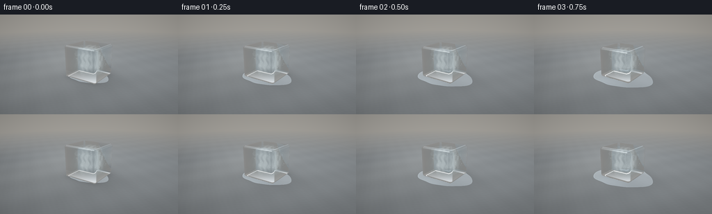
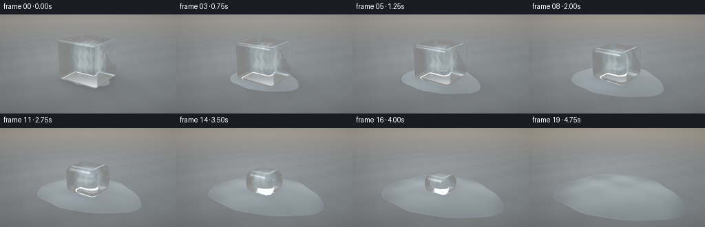
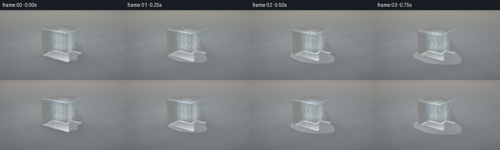
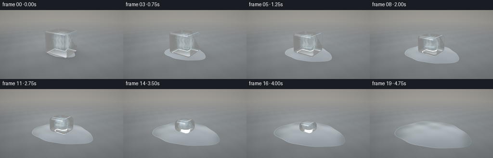

CODING AGENTS AS PIXEL WORLD MODELS
traex/GPT-6.1-Sol · phygen_096
点击播放 · 原生 RGB 像素
逐轮保存的候选
回放视频、检查图与代码变化。
每份候选均可单独播放。实际图片检查记录在下方工具轨迹中。
候选 01播放与检查图
点击播放 · 原生 RGB 像素


展开代码变化
--- 上一保存版本
+++ 本次保存版本
@@ -0,0 +1,217 @@
+from pathlib import Path
+import json
+import numpy as np
+from PIL import Image
+from artifact_io import save
+
+ROOT=Path(__file__).parent
+SPEC=json.loads((ROOT/'task_spec.json').read_text())
+W,H=SPEC['width'],SPEC['height']
+SS=3
+rng=np.random.default_rng(41)
+
+def unit(v):
+ return v/(np.linalg.norm(v,axis=-1,keepdims=True)+1e-10)
+def mix(a,b,t):
+ return a*(1-t)+b*t
+
+def environment(d):
+ # A broad photographic softbox and a warm, defocused studio wall.
+ yy=d[...,1]
+ col=np.empty(d.shape,dtype=np.float64)
+ b=.34+.23*np.clip(yy,0,1)
+ col[...,0]=b*1.10; col[...,1]=b*1.07; col[...,2]=b*1.03
+ uv=d/(np.abs(d[...,2,None])+1e-5)
+ box=np.exp(-((d[...,0]+.47)/.24)**8-((d[...,1]-.62)/.29)**8)
+ col+=box[...,None]*np.array([2.8,3.05,3.3])
+ strip=np.exp(-((d[...,0]-.76)/.05)**2-((d[...,1]-.35)/.52)**4)
+ col+=strip[...,None]*np.array([1.7,1.53,1.3])
+ return col
+
+CAM=np.array([3.1,2.35,4.6]); TARGET=np.array([0,.46,0])
+fwd=unit(TARGET-CAM); right=unit(np.cross(fwd,np.array([0,1,0]))); up=np.cross(right,fwd)
+y,x=np.mgrid[0:H*SS,0:W*SS]
+x=(x+.5)/(W*SS)*2-1; y=1-(y+.5)/(H*SS)*2
+D=unit(fwd+right*x[...,None]*.57+up*y[...,None]*(.57*H/W))
+D=D.reshape(-1,3); O=np.broadcast_to(CAM,D.shape)
+# Small air pockets fixed to the ice, revealed by the moving melt boundary.
+bubbles=np.column_stack([rng.uniform(-.45,.45,36),rng.uniform(.16,1.08,36),rng.uniform(-.46,.46,36)])
+bubble_r=rng.uniform(.007,.024,36)
+cracks=[]
+for j in range(7):
+ n=unit(rng.normal(size=3)); p=np.array([rng.uniform(-.3,.3),rng.uniform(.25,.99),rng.uniform(-.3,.3)])
+ cracks.append((n,p,rng.uniform(.17,.38)))
+
+def shape_params(t):
+ remaining=max(0,1-t**1.13)
+ a=.66*remaining**.27
+ h=1.19*remaining**.48
+ bevel=min(a*.65,h*.39,.07+.23*t)
+ return np.array([a,h/2,a*.92]),bevel,np.array([0,h/2+.025,0]),remaining
+
+def sdf(p,b,r,c):
+ q=np.abs(p-c)-(b-r)
+ return np.linalg.norm(np.maximum(q,0),axis=-1)+np.minimum(np.max(q,axis=-1),0)-r
+
+def normal(p,b,r,c):
+ q=np.abs(p-c)-(b-r)
+ v=np.maximum(q,0)*np.sign(p-c)
+ n=unit(v)
+ z=np.linalg.norm(v,axis=-1)<1e-8
+ if np.any(z):
+ ax=np.argmax(q[z],axis=-1)
+ n[z]=0; n[np.where(z)[0],ax]=np.sign((p[z]-c)[np.arange(len(ax)),ax])
+ return n
+
+def trace(o,d,b,r,c,inside=False):
+ # Pure numpy sphere tracing of an analytic rounded block.
+ distance=np.zeros(len(d)); live=np.ones(len(d),bool); found=np.zeros(len(d),bool)
+ for k in range(85):
+ idx=np.flatnonzero(live)
+ if not len(idx): break
+ p=o[idx]+distance[idx,None]*d[idx]
+ sd=sdf(p,b,r,c)
+ err=-sd if inside else sd
+ hits=np.abs(err)<.0005
+ found[idx[hits]]=True; live[idx[hits]]=False
+ rest=idx[~hits]
+ distance[rest]+=np.maximum(err[~hits]*.92,.00025)
+ live[distance>12]=False
+ return distance,found
+
+def refract(d,n,eta):
+ cos=-np.sum(d*n,axis=-1)
+ k=1-eta**2*(1-cos*cos)
+ rd=eta*d+(eta*cos-np.sqrt(np.maximum(0,k)))[...,None]*n
+ return unit(rd),k<0
+
+
+def ground(o,d,t,shadow=True):
+ dist=-o[...,1]/(d[...,1]+1e-12)
+ p=o+dist[...,None]*d
+ x,z=p[...,0],p[...,2]
+ # Fine slate mottling, continuous across the entire timelapse.
+ tex=(np.sin(x*34+np.sin(z*18)) * np.sin(z*39+x*9)*.004+
+ np.sin(x*3.7+z*2.1)*.008+np.sin(z*6.6-x*4.8)*.004)
+ light=.30+.045*np.tanh(-z*.5)+tex
+ c=light[...,None]*np.array([.92,1.0,1.055])
+ c+=np.exp(-((x+2)/2.3)**2-((z+1)/3.5)**2)[...,None]*np.array([.075,.075,.07])
+ if shadow:
+ b,r,cc,rem=shape_params(t)
+ s=np.exp(-((x-.15)/(b[0]+.25))**2-((z+.08)/(b[2]+.22))**2)
+ c*=1-(.36*rem**.42*s)[...,None]
+ contact=np.exp(-(x/(b[0]+.04))**6-(z/(b[2]+.04))**6)
+ c*=1-(.2*rem**.35*contact)[...,None]
+ # The boundary grows continuously while water stays flat on the slab.
+ theta=np.arctan2(z,x)
+ radius=.71+1.18*t**.66
+ shape=1+.055*np.sin(3*theta+.9)+.027*np.cos(5*theta-.4)+.012*np.sin(9*theta)
+ rho=np.sqrt((x/1.09)**2+(z/.89)**2)/(radius*shape)
+ wet=np.clip((1-rho)*160,0,1)
+ # Fresnel reflection, a narrow raised meniscus, and refracted stone texture.
+ edge=np.exp(-((rho-.984)/.011)**2)
+ N=np.stack([.009*np.sin(x*5+z*2),np.ones_like(x),.009*np.cos(z*6-x)],axis=-1)
+ N=unit(N)
+ refl=d-2*np.sum(d*N,axis=-1)[...,None]*N
+ env=environment(refl)
+ fres=.020+(1-.020)*(1-np.clip(-d[...,1],0,1))**5
+ # A glassy sheen is strongest around the rim, not an opaque blue disk.
+ wc=c*np.array([.90,.98,1.015])*(1-fres[...,None])+env*fres[...,None]
+ wc+=edge[...,None]*np.array([.10,.13,.15])*(.3+.7*np.clip(-x+z+.5,0,1))[...,None]
+ darkrim=np.exp(-((rho-1.004)/.008)**2)
+ wc*=1-darkrim[...,None]*.15
+ c=mix(c,wc,wet[...,None])
+ # Soft reflection of the shrinking ice in the wet surface.
+ b,r,cc,rem=shape_params(t)
+ rc=np.exp(-((x+.12)/(b[0]+.07))**4-((z-.18)/(b[2]+.3))**4)
+ c+=rc[...,None]*np.array([.045,.06,.07])*rem**.6*wet[...,None]
+ # Broad distant background and smooth lens falloff.
+ distant=np.clip((dist-9)/12,0,1)
+ wall=np.broadcast_to(np.array([.48,.46,.42]),c.shape)
+ c=mix(c,wall,distant[...,None])
+ invalid=(dist<=0)|(d[...,1]>=0)
+ c[invalid]=environment(d[invalid])
+ return c
+
+
+def render(t):
+ b,rr,center,rem=shape_params(t)
+ col=ground(O,D,t)
+ if rem>1e-6:
+ td,hit=trace(O,D,b,rr,center)
+ ids=np.flatnonzero(hit)
+ p=O[ids]+td[ids,None]*D[ids]; ray=D[ids]
+ n=normal(p,b,rr,center)
+ cos=np.clip(-np.sum(ray*n,axis=-1),0,1)
+ F=.018+(1-.018)*(1-cos)**5
+ reflect=ray-2*np.sum(ray*n,axis=-1)[:,None]*n
+ reflected=ground(p+n*.002,reflect,t)
+ rd,tir=refract(ray,n,1/1.31)
+ inner=p+rd*.002
+ exdist,exhit=trace(inner,rd,b,rr,center,inside=True)
+ ep=inner+rd*exdist[:,None]
+ en=normal(ep,b,rr,center)
+ out,outtir=refract(rd,-en,1.31)
+ trans=ground(ep+out*.004,out,t)
+ # Internal reflections from back surfaces provide the blue glass facets.
+ back=rd-2*np.sum(rd*en,axis=-1)[:,None]*en
+ bounce=environment(back)*.8
+ trans=mix(trans,bounce,outtir[:,None]*.85)
+ extcos=np.clip(np.sum(rd*en,axis=-1),0,1)
+ f2=.018+(1-.018)*(1-extcos)**5
+ trans=mix(trans,bounce,(f2*.45)[:,None])
+ length=exdist
+ absorption=np.exp(-length[:,None]*np.array([.18,.085,.038]))
+ trans=trans*absorption+np.array([.48,.67,.75])*(1-absorption)*.28
+ # Suspended microcrystals create the cloudy core of real ice.
+ mid=inner+rd*(length*.48)[:,None]
+ cloud=np.exp(-((mid[:,0]/max(b[0]*.52,.03))**2+((mid[:,1]-center[1])/max(b[1]*.75,.03))**2+(mid[:,2]/max(b[2]*.6,.03))**2)*1.7)
+ noise=.6+.20*np.sin(mid[:,0]*31+np.sin(mid[:,1]*19))+.15*np.sin(mid[:,2]*47+mid[:,1]*15)
+ scatter=np.clip(cloud*noise*length*.75*(1-.48*t),0,.48)
+ trans=mix(trans,np.array([.76,.86,.88]),scatter[:,None])
+ # Fine, finite internal fracture sheets, seen through both ice interfaces.
+ for cn,cp,rad in cracks:
+ denom=rd@cn
+ ct=((cp-inner)@cn)/(denom+1e-10)
+ loc=inner+ct[:,None]*rd
+ off=loc-cp
+ disk=np.sum(off*off,axis=-1)<rad*rad
+ active=(ct>.003)&(ct<length-.003)&disk
+ tracery=(.5+.5*np.sin(loc[:,0]*89+loc[:,1]*49+np.sin(loc[:,2]*50)))**10
+ opacity=active*(.07+.17*tracery)*np.clip(1-np.abs(denom),0,1)
+ trans=mix(trans,np.array([.79,.89,.93]),opacity[:,None])
+ for bp,br in zip(bubbles,bubble_r):
+ proj=np.sum((bp-inner)*rd,axis=-1)
+ delta=inner+rd*proj[:,None]-bp
+ q=np.sum(delta*delta,axis=-1)/(br*br)
+ active=(proj>0)&(proj<length)&(q<1)
+ rim=active*np.exp(-((np.sqrt(np.maximum(q,0))-.78)/.19)**2)*.32
+ trans=mix(trans,np.array([.81,.91,.94]),rim[:,None])
+ ice=mix(trans,reflected,F[:,None])
+ # Wide, glossy glints follow rounded corners and diminish as they melt.
+ L=unit(np.array([-3,6,3.5])-p)
+ half=unit(L-ray)
+ spec=np.maximum(np.sum(n*half,axis=-1),0)**160
+ ice+=spec[:,None]*np.array([1.0,1.1,1.13])*.65
+ # Thin frost is limited to the bevel, leaving the faces transparent.
+ q=np.abs(p-center)/(b+1e-8)
+ bevelness=np.clip((np.sort(q,axis=-1)[:,-2]-.74)*3,0,1)
+ frost=bevelness*.07*(1-t)*(.65+.35*np.sin(p[:,0]*62+p[:,1]*53+p[:,2]*39)**2)
+ ice=mix(ice,np.array([.8,.9,.94]),frost[:,None])
+ col[ids]=ice
+ col=col.reshape(H*SS,W*SS,3)
+ # Gentle photographic contrast with controlled highlights and stable fine grain.
+ col=np.clip(col,0,None)
+ col=col/(1+col*.34)
+ col=np.clip(col,0,1)**(1/2.05)
+ vign=1-.085*(x*x+y*y)
+ col*=vign[...,None]
+ image=Image.fromarray(np.uint8(np.clip(col*255,0,255)))
+ return np.asarray(image.resize((W,H),Image.Resampling.LANCZOS)).copy()
+
+if __name__=='__main__':
+ frames=[]
+ for i in range(SPEC['frames']):
+ print(f'Rendering {i+1}/{SPEC["frames"]}',flush=True)
+ frames.append(render(i/(SPEC['frames']-1)))
+ save(np.stack(frames),ROOT)
候选 02播放与检查图
点击播放 · 原生 RGB 像素


展开代码变化
--- 上一保存版本
+++ 本次保存版本
@@ -32,7 +32,7 @@
fwd=unit(TARGET-CAM); right=unit(np.cross(fwd,np.array([0,1,0]))); up=np.cross(right,fwd)
y,x=np.mgrid[0:H*SS,0:W*SS]
x=(x+.5)/(W*SS)*2-1; y=1-(y+.5)/(H*SS)*2
-D=unit(fwd+right*x[...,None]*.57+up*y[...,None]*(.57*H/W))
+D=unit(fwd+right*x[...,None]*.45+up*y[...,None]*(.45*H/W))
D=D.reshape(-1,3); O=np.broadcast_to(CAM,D.shape)
# Small air pockets fixed to the ice, revealed by the moving melt boundary.
bubbles=np.column_stack([rng.uniform(-.45,.45,36),rng.uniform(.16,1.08,36),rng.uniform(-.46,.46,36)])
@@ -104,7 +104,7 @@
c*=1-(.2*rem**.35*contact)[...,None]
# The boundary grows continuously while water stays flat on the slab.
theta=np.arctan2(z,x)
- radius=.71+1.18*t**.66
+ radius=.63+1.17*t**.66
shape=1+.055*np.sin(3*theta+.9)+.027*np.cos(5*theta-.4)+.012*np.sin(9*theta)
rho=np.sqrt((x/1.09)**2+(z/.89)**2)/(radius*shape)
wet=np.clip((1-rho)*160,0,1)
@@ -114,10 +114,10 @@
N=unit(N)
refl=d-2*np.sum(d*N,axis=-1)[...,None]*N
env=environment(refl)
- fres=.020+(1-.020)*(1-np.clip(-d[...,1],0,1))**5
+ fres=(.020+(1-.020)*(1-np.clip(-d[...,1],0,1))**5)*.60
# A glassy sheen is strongest around the rim, not an opaque blue disk.
wc=c*np.array([.90,.98,1.015])*(1-fres[...,None])+env*fres[...,None]
- wc+=edge[...,None]*np.array([.10,.13,.15])*(.3+.7*np.clip(-x+z+.5,0,1))[...,None]
+ wc+=edge[...,None]*np.array([.035,.046,.052])*(.3+.7*np.clip(-x+z+.5,0,1))[...,None]
darkrim=np.exp(-((rho-1.004)/.008)**2)
wc*=1-darkrim[...,None]*.15
c=mix(c,wc,wet[...,None])
@@ -127,7 +127,7 @@
c+=rc[...,None]*np.array([.045,.06,.07])*rem**.6*wet[...,None]
# Broad distant background and smooth lens falloff.
distant=np.clip((dist-9)/12,0,1)
- wall=np.broadcast_to(np.array([.48,.46,.42]),c.shape)
+ wall=np.broadcast_to(np.array([.48+.045*t,.46+.018*t,.42-.012*t]),c.shape)
c=mix(c,wall,distant[...,None])
invalid=(dist<=0)|(d[...,1]>=0)
c[invalid]=environment(d[invalid])
可观测工具轨迹
实际执行的命令与返回图片。
命令 1exit 0
/bin/bash -lc 'ls -la && cat prompt.txt && cat GENERATION_RULES.md && cat task_spec.json'
命令 2exit 0
/bin/bash -lc "cat artifact_io.py && python - <<'PY' import importlib.util for m in ['numpy','PIL','scipy']: print(m, bool(importlib.util.find_spec(m))) PY"
命令 3exit 0
/bin/bash -lc "cat > generate.py <<'PY'
from pathlib import Path
import json
import numpy as np
from PIL import Image
from artifact_io import save
ROOT=Path(__file__).parent
SPEC=json.loads((ROOT/'task_spec.json').read_text())
W,H=SPEC['width'],SPEC['height']
SS=3
rng=np.random.default_rng(41)
def unit(v):
return v/(np.linalg.norm(v,axis=-1,keepdims=True)+1e-10)
def mix(a,b,t):
return a*(1-t)+b*t
def environment(d):
# A broad photographic softbox and a warm, defocused studio wall.
yy=d[...,1]
col=np.empty(d.shape,dtype=np.float64)
b=.34+.23*np.clip(yy,0,1)
col[...,0]=b*1.10; col[...,1]=b*1.07; col[...,2]=b*1.03
uv=d/(np.abs(d[...,2,None])+1e-5)
box=np.exp(-((d[...,0]+.47)/.24)**8-((d[...,1]-.62)/.29)**8)
col+=box[...,None]*np.array([2.8,3.05,3.3])
strip=np.exp(-((d[...,0]-.76)/.05)**2-((d[...,1]-.35)/.52)**4)
col+=strip[...,None]*np.array([1.7,1.53,1.3])
return col
CAM=np.array([3.1,2.35,4.6]); TARGET=np.array([0,.46,0])
fwd=unit(TARGET-CAM); right=unit(np.cross(fwd,np.array([0,1,0]))); up=np.cross(right,fwd)
y,x=np.mgrid[0:H*SS,0:W*SS]
x=(x+.5)/(W*SS)*2-1; y=1-(y+.5)/(H*SS)*2
D=unit(fwd+right*x[...,None]*.57+up*y[...,None]*(.57*H/W))
D=D.reshape(-1,3); O=np.broadcast_to(CAM,D.shape)
# Small air pockets fixed to the ice, revealed by the moving melt boundary.
bubbles=np.column_stack([rng.uniform(-.45,.45,36),rng.uniform(.16,1.08,36),rng.uniform(-.46,.46,36)])
bubble_r=rng.uniform(.007,.024,36)
cracks=[]
for j in range(7):
n=unit(rng.normal(size=3)); p=np.array([rng.uniform(-.3,.3),rng.uniform(.25,.99),rng.uniform(-.3,.3)])
cracks.append((n,p,rng.uniform(.17,.38)))
def shape_params(t):
remaining=max(0,1-t**1.13)
a=.66*remaining**.27
h=1.19*remaining**.48
bevel=min(a*.65,h*.39,.07+.23*t)
return np.array([a,h/2,a*.92]),bevel,np.array([0,h/2+.025,0]),remaining
def sdf(p,b,r,c):
q=np.abs(p-c)-(b-r)
return np.linalg.norm(np.maximum(q,0),axis=-1)+np.minimum(np.max(q,axis=-1),0)-r
def normal(p,b,r,c):
q=np.abs(p-c)-(b-r)
v=np.maximum(q,0)*np.sign(p-c)
n=unit(v)
z=np.linalg.norm(v,axis=-1)<1e-8
if np.any(z):
ax=np.argmax(q[z],axis=-1)
n[z]=0; n[np.where(z)[0],ax]=np.sign((p[z]-c)[np.arange(len(ax)),ax])
return n
def trace(o,d,b,r,c,inside=False):
# Pure numpy sphere tracing of an analytic rounded block.
distance=np.zeros(len(d)); live=np.ones(len(d),bool); found=np.zeros(len(d),bool)
for k in range(85):
idx=np.flatnonzero(live)
if not len(idx): break
p=o[idx]+distance[idx,None]*d[idx]
sd=sdf(p,b,r,c)
err=-sd if inside else sd
hits=np.abs(err)<.0005
found[idx[hits]]=True; live[idx[hits]]=False
rest=idx[~hits]
distance[rest]+=np.maximum(err[~hits]*.92,.00025)
live[distance>12]=False
return distance,found
def refract(d,n,eta):
cos=-np.sum(d*n,axis=-1)
k=1-eta**2*(1-cos*cos)
rd=eta*d+(eta*cos-np.sqrt(np.maximum(0,k)))[...,None]*n
return unit(rd),k<0
def ground(o,d,t,shadow=True):
dist=-o[...,1]/(d[...,1]+1e-12)
p=o+dist[...,None]*d
x,z=p[...,0],p[...,2]
# Fine slate mottling, continuous across the entire timelapse.
tex=(np.sin(x*34+np.sin(z*18)) * np.sin(z*39+x*9)*.004+
np.sin(x*3.7+z*2.1)*.008+np.sin(z*6.6-x*4.8)*.004)
light=.30+.045*np.tanh(-z*.5)+tex
c=light[...,None]*np.array([.92,1.0,1.055])
c+=np.exp(-((x+2)/2.3)**2-((z+1)/3.5)**2)[...,None]*np.array([.075,.075,.07])
if shadow:
b,r,cc,rem=shape_params(t)
s=np.exp(-((x-.15)/(b[0]+.25))**2-((z+.08)/(b[2]+.22))**2)
c*=1-(.36*rem**.42*s)[...,None]
contact=np.exp(-(x/(b[0]+.04))**6-(z/(b[2]+.04))**6)
c*=1-(.2*rem**.35*contact)[...,None]
# The boundary grows continuously while water stays flat on the slab.
theta=np.arctan2(z,x)
radius=.71+1.18*t**.66
shape=1+.055*np.sin(3*theta+.9)+.027*np.cos(5*theta-.4)+.012*np.sin(9*theta)
rho=np.sqrt((x/1.09)**2+(z/.89)**2)/(radius*shape)
wet=np.clip((1-rho)*160,0,1)
# Fresnel reflection, a narrow raised meniscus, and refracted stone texture.
edge=np.exp(-((rho-.984)/.011)**2)
N=np.stack([.009*np.sin(x*5+z*2),np.ones_like(x),.009*np.cos(z*6-x)],axis=-1)
N=unit(N)
refl=d-2*np.sum(d*N,axis=-1)[...,None]*N
env=environment(refl)
fres=.020+(1-.020)*(1-np.clip(-d[...,1],0,1))**5
# A glassy sheen is strongest around the rim, not an opaque blue disk.
wc=c*np.array([.90,.98,1.015])*(1-fres[...,None])+env*fres[...,None]
wc+=edge[...,None]*np.array([.10,.13,.15])*(.3+.7*np.clip(-x+z+.5,0,1))[...,None]
darkrim=np.exp(-((rho-1.004)/.008)**2)
wc*=1-darkrim[...,None]*.15
c=mix(c,wc,wet[...,None])
# Soft reflection of the shrinking ice in the wet surface.
b,r,cc,rem=shape_params(t)
rc=np.exp(-((x+.12)/(b[0]+.07))**4-((z-.18)/(b[2]+.3))**4)
c+=rc[...,None]*np.array([.045,.06,.07])*rem**.6*wet[...,None]
# Broad distant background and smooth lens falloff.
distant=np.clip((dist-9)/12,0,1)
wall=np.broadcast_to(np.array([.48,.46,.42]),c.shape)
c=mix(c,wall,distant[...,None])
invalid=(dist<=0)|(d[...,1]>=0)
c[invalid]=environment(d[invalid])
return c
def render(t):
b,rr,center,rem=shape_params(t)
col=ground(O,D,t)
if rem>1e-6:
td,hit=trace(O,D,b,rr,center)
ids=np.flatnonzero(hit)
p=O[ids]+td[ids,None]*D[ids]; ray=D[ids]
n=normal(p,b,rr,center)
cos=np.clip(-np.sum(ray*n,axis=-1),0,1)
F=.018+(1-.018)*(1-cos)**5
reflect=ray-2*np.sum(ray*n,axis=-1)[:,None]*n
reflected=ground(p+n*.002,reflect,t)
rd,tir=refract(ray,n,1/1.31)
inner=p+rd*.002
exdist,exhit=trace(inner,rd,b,rr,center,inside=True)
ep=inner+rd*exdist[:,None]
en=normal(ep,b,rr,center)
out,outtir=refract(rd,-en,1.31)
trans=ground(ep+out*.004,out,t)
# Internal reflections from back surfaces provide the blue glass facets.
back=rd-2*np.sum(rd*en,axis=-1)[:,None]*en
bounce=environment(back)*.8
trans=mix(trans,bounce,outtir[:,None]*.85)
extcos=np.clip(np.sum(rd*en,axis=-1),0,1)
f2=.018+(1-.018)*(1-extcos)**5
trans=mix(trans,bounce,(f2*.45)[:,None])
length=exdist
absorption=np.exp(-length[:,None]*np.array([.18,.085,.038]))
trans=trans*absorption+np.array([.48,.67,.75])*(1-absorption)*.28
# Suspended microcrystals create the cloudy core of real ice.
mid=inner+rd*(length*.48)[:,None]
cloud=np.exp(-((mid[:,0]/max(b[0]*.52,.03))**2+((mid[:,1]-center[1])/max(b[1]*.75,.03))**2+(mid[:,2]/max(b[2]*.6,.03))**2)*1.7)
noise=.6+.20*np.sin(mid[:,0]*31+np.sin(mid[:,1]*19))+.15*np.sin(mid[:,2]*47+mid[:,1]*15)
scatter=np.clip(cloud*noise*length*.75*(1-.48*t),0,.48)
trans=mix(trans,np.array([.76,.86,.88]),scatter[:,None])
# Fine, finite internal fracture sheets, seen through both ice interfaces.
for cn,cp,rad in cracks:
denom=rd@cn
ct=((cp-inner)@cn)/(denom+1e-10)
loc=inner+ct[:,None]*rd
off=loc-cp
disk=np.sum(off*off,axis=-1)<rad*rad
active=(ct>.003)&(ct<length-.003)&disk
tracery=(.5+.5*np.sin(loc[:,0]*89+loc[:,1]*49+np.sin(loc[:,2]*50)))**10
opacity=active*(.07+.17*tracery)*np.clip(1-np.abs(denom),0,1)
trans=mix(trans,np.array([.79,.89,.93]),opacity[:,None])
for bp,br in zip(bubbles,bubble_r):
proj=np.sum((bp-inner)*rd,axis=-1)
delta=inner+rd*proj[:,None]-bp
q=np.sum(delta*delta,axis=-1)/(br*br)
active=(proj>0)&(proj<length)&(q<1)
rim=active*np.exp(-((np.sqrt(np.maximum(q,0))-.78)/.19)**2)*.32
trans=mix(trans,np.array([.81,.91,.94]),rim[:,None])
ice=mix(trans,reflected,F[:,None])
# Wide, glossy glints follow rounded corners and diminish as they melt.
L=unit(np.array([-3,6,3.5])-p)
half=unit(L-ray)
spec=np.maximum(np.sum(n*half,axis=-1),0)**160
ice+=spec[:,None]*np.array([1.0,1.1,1.13])*.65
# Thin frost is limited to the bevel, leaving the faces transparent.
q=np.abs(p-center)/(b+1e-8)
bevelness=np.clip((np.sort(q,axis=-1)[:,-2]-.74)*3,0,1)
frost=bevelness*.07*(1-t)*(.65+.35*np.sin(p[:,0]*62+p[:,1]*53+p[:,2]*39)**2)
ice=mix(ice,np.array([.8,.9,.94]),frost[:,None])
col[ids]=ice
col=col.reshape(H*SS,W*SS,3)
# Gentle photographic contrast with controlled highlights and stable fine grain.
col=np.clip(col,0,None)
col=col/(1+col*.34)
col=np.clip(col,0,1)**(1/2.05)
vign=1-.085*(x*x+y*y)
col*=vign[...,None]
image=Image.fromarray(np.uint8(np.clip(col*255,0,255)))
return np.asarray(image.resize((W,H),Image.Resampling.LANCZOS)).copy()
if __name__=='__main__':
frames=[]
for i in range(SPEC['frames']):
print(f'Rendering {i+1}/{SPEC[\"frames\"]}',flush=True)
frames.append(render(i/(SPEC['frames']-1)))
save(np.stack(frames),ROOT)
PY
OPENBLAS_NUM_THREADS=1 python generate.py"命令 4exit 0
/bin/bash -lc "python - <<'PY'
p='generate.py'
s=open(p).read().replace('*.57+up*y[...,None]*(.57*H/W)','*.45+up*y[...,None]*(.45*H/W)')
s=s.replace('radius=.71+1.18*t**.66','radius=.63+1.17*t**.66')
s=s.replace('fres=.020+(1-.020)*(1-np.clip(-d[...,1],0,1))**5','fres=(.020+(1-.020)*(1-np.clip(-d[...,1],0,1))**5)*.60')
s=s.replace('np.array([.10,.13,.15])','np.array([.035,.046,.052])')
s=s.replace('wall=np.broadcast_to(np.array([.48,.46,.42]),c.shape)','wall=np.broadcast_to(np.array([.48+.045*t,.46+.018*t,.42-.012*t]),c.shape)')
open(p,'w').write(s)
PY
OPENBLAS_NUM_THREADS=1 python generate.py"命令 5exit 0
/bin/bash -lc "python - <<'PY'
import numpy as np
from pathlib import Path
p=np.load('pixels.npz')['pixels']
assert p.shape==(144,256,20)
assert len(list(Path('frames').glob('*.png')))==20
for name in ('generate.py','pixels.npz','index.html','inspection.png'):
assert Path(name).is_file()
print('Verified: 20 RGB frames, 256Ã144, 4 fps; all required artifacts exist.')
PY
if command -v ffmpeg >/dev/null 2>&1; then ffmpeg -hide_banner -loglevel error -y -framerate 4 -i frames/%02d.png -c:v libx264 -pix_fmt yuv420p -crf 18 -movflags +faststart video.mp4; fi"视觉工具实际返回图片 1

视觉工具实际返回图片 2

保存候选 2 份；完成命令 5 次；可验证图片返回 2 张。原始 API 响应与完整日志保留在本地。